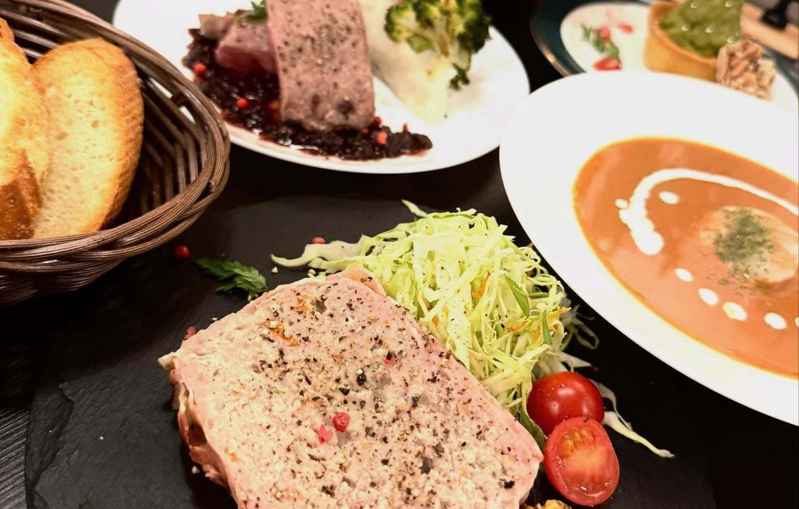
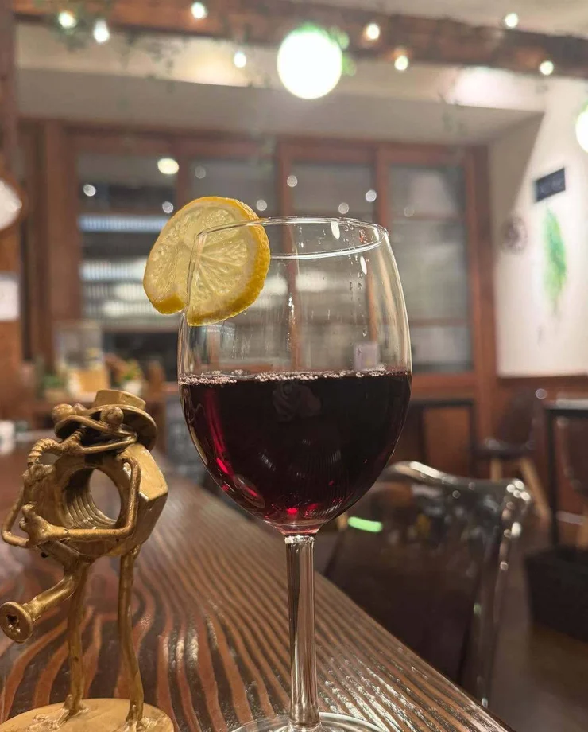

Bistro à Nakamurabashi東京・中村橋の小さなビストロ

昼の、ひと皿。夜の、一杯。

BISTRO HOLIC 東京・中村橋
ちゃんとつくる。
気軽に、楽しむ。
01 / LE DÉJEUNER
Lunch.
ソースまで、
手をかけたオムライス。
11:00–15:00 L.O. 14:30

コクのある鳳凰卵と、肉を焼くところから一日煮込むデミグラス。酸味を生かした自家製トマトソースも選べます。
ランチのお品書き02 / LE DÎNER
日が暮れたら、ワインとともに。
Dinner.
前菜から始まる、
ビストロの夜。
17:30–21:00 金・土・日は22:00まで
肉をひき、練り、火を入れて一晩休ませる田舎風パテ。季節の前菜と盛り合わせて、ワインの一杯目に。牛ホホ肉の赤ワイン煮込みや魚介出汁のリゾットもご用意しています。
ディナーのお品書き
03 / BEHIND THE MENU
店主のこだわり